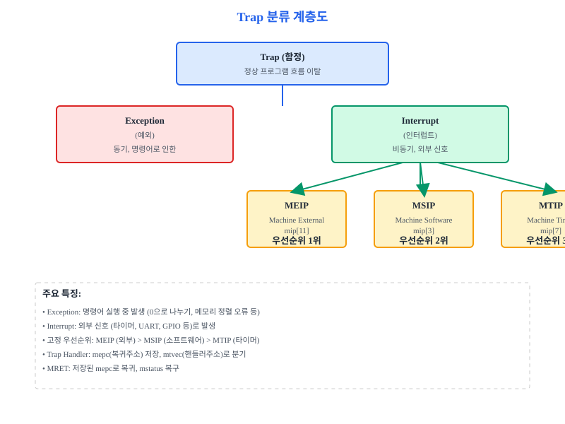
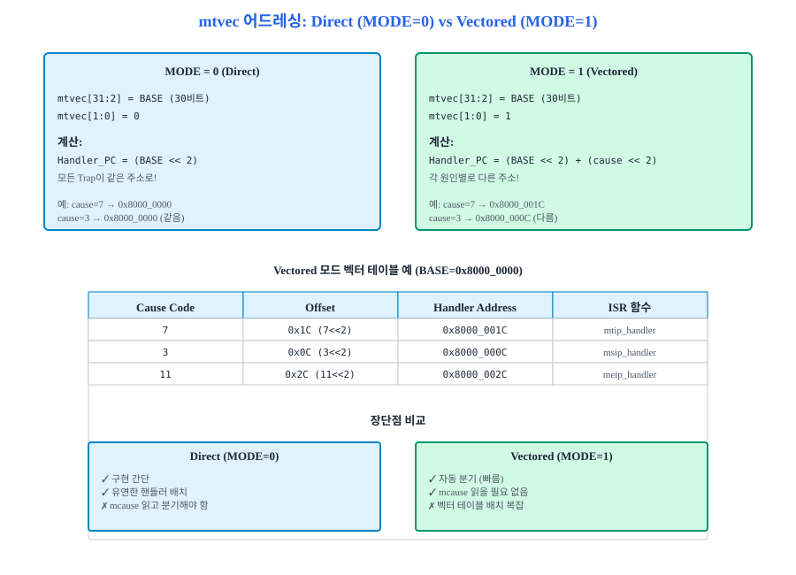
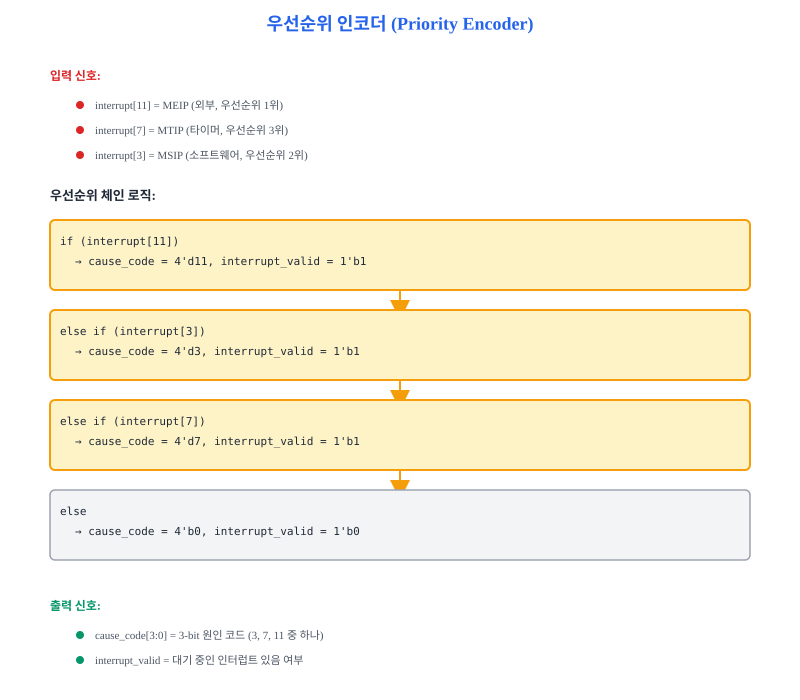
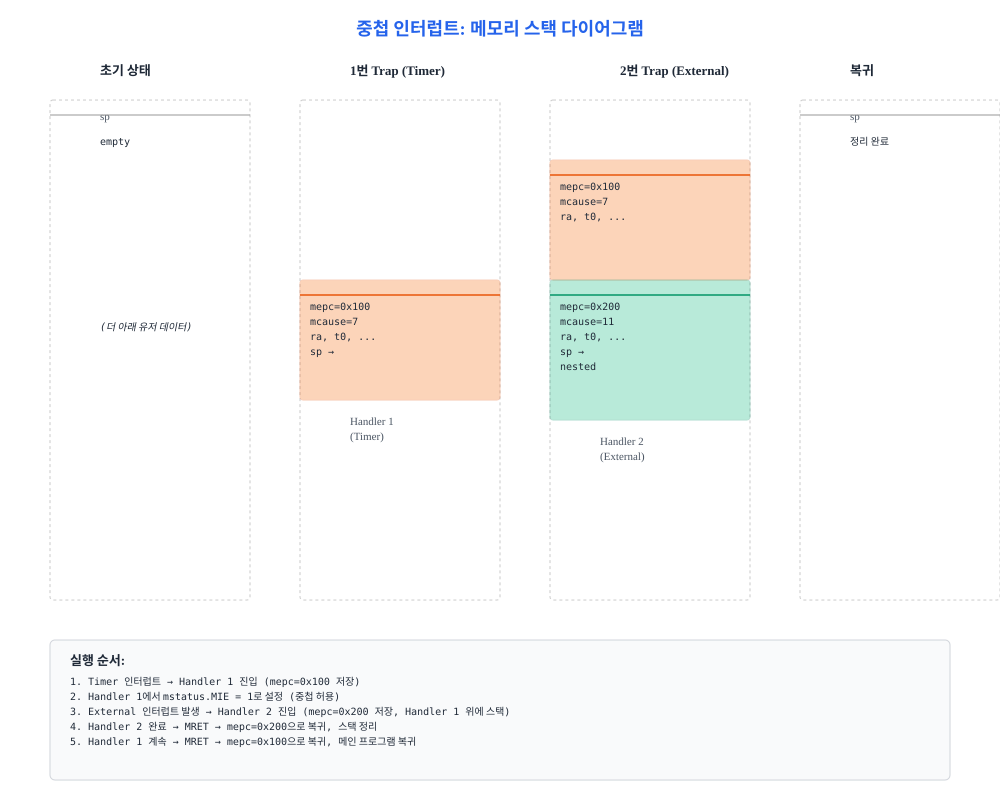
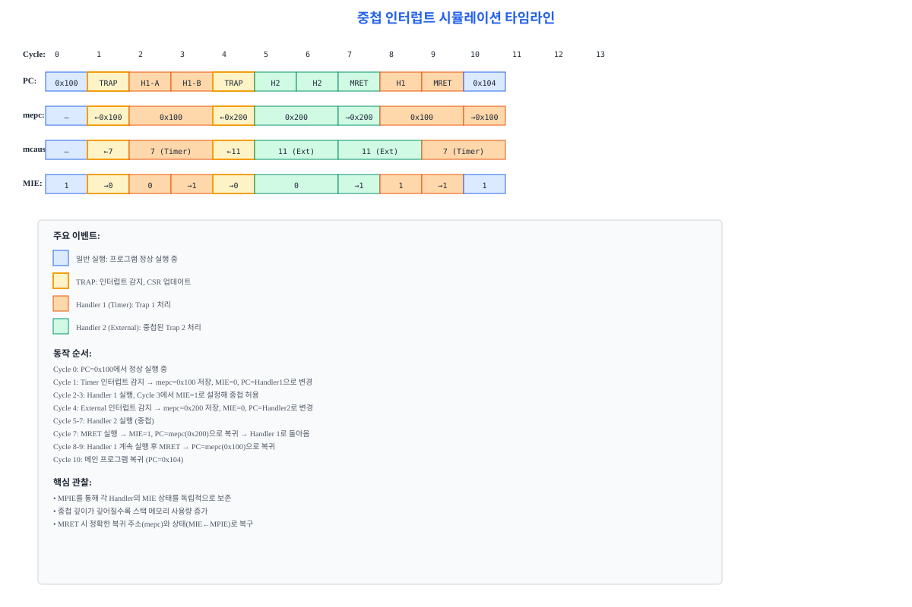

RISC-V 프로세서는 정상 프로그램 흐름을 벗어나는 이벤트(타이머, 외부 신호, 예외 조건)를 처리하기 위해 예외와 인터럽트 메커니즘을 제공합니다.
이 장에서는 우선순위 인코더, Trap Handler, CSR 상태 관리, 그리고 실제 UART 인터럽트 처리 구현을 다룹니다.
완성되면 Basys 3에서 타이머와 UART 인터럽트를 동시에 처리할 수 있는 시스템을 구축합니다.
19.1 예외와 인터럽트의 분류 및 우선순위
컴퓨터 프로세서는 항상 메인 프로그램을 순차적으로 실행합니다.
하지만 현실에서는 예측 불가능한 사건이 발생합니다.
프로세서가 정수 0으로 나누려고 하거나, 주변 장치에서 데이터가 도착했거나, 타이머가 시간을 초과했을 때 어떻게 될까요?
일반적인 시퀀셜 프로그램으로는 이런 상황을 처리할 수 없습니다.
이를 위해 RISC-V 아키텍처는 예외(exception)와 인터럽트(interrupt)라는 메커니즘을 제공합니다.
예외 vs 인터럽트
우선 용어 정의부터 명확히 하겠습니다.
RISC-V Privileged ISA 스펙(권한 ISA 규격)에서:
예외(Exception): 현재 실행 중인 명령어로 인해 발생하는 이벤트입니다.
예: 정렬 오류(unaligned memory access), 불법 명령어, 0으로 나누기 (RISC-V는 이를 정의하지 않음).
예외는 명령어 경계에서만 감지되며, 해당 명령어를 재시작해야 할 수도 있습니다.
인터럽트(Interrupt): 현재 프로그램과 무관하게 외부 또는 내부 장치에서 비동기적으로 발생하는 신호입니다.
예: 타이머 만료, UART 데이터 도착, 외부 버튼 클릭.
인터럽트는 명령어 실행 도중 언제든 발생할 수 있습니다.
두 경우 모두 정상 프로그램 흐름을 벗어나 Trap Handler(함정 처리기)라는 특별한 코드를 실행해야 합니다.
RISC-V는 이를 총칭하여 Trap(함정)이라고 부릅니다.
RISC-V RV32I의 세 가지 인터럽트 소스
RV32I 기본 ISA는 세 가지 인터럽트 소스를 정의합니다(M-mode, Machine Privilege Level).
각 인터럽트는 mip(Machine Interrupt Pending) CSR의 특정 비트에 대응됩니다:
인터럽트
mip 비트
설명
예시
MTIP (Machine Timer Interrupt)
mip[7]
타이머 인터럽트. 외부 타이머 칩이 시간을 초과하면 발생
100MHz에서 1초마다 LED 깜박임
MSIP (Machine Software Interrupt)
mip[3]
소프트웨어 인터럽트. 한 CPU가 다른 CPU를 깨우거나, 또는 자신의 코드에서 프로그램적으로 발생
우선순위 재조정, IPI(Inter-Processor Interrupt)
MEIP (Machine External Interrupt)
mip[11]
외부 인터럽트. UART, GPIO, 기타 주변 장치의 신호
USB-UART에서 "Enter" 키 누름, GPIO 버튼
고정 우선순위
여러 인터럽트가 동시에 발생하면 어느 것을 먼저 처리할까요?
RISC-V 스펙은 고정된 우선순위(fixed priority)를 정의합니다:
MEIP (외부) > MSIP (소프트웨어) > MTIP (타이머)
이는 하드웨어 로직에 고정되어 있으며, 소프트웨어에서 동적으로 변경할 수 없습니다.

그림 19.1: RISC-V 예외와 인터럽트 분류. Trap은 예외와 인터럽트의 총칭이며, 세 가지 인터럽트 소스 간의 우선순위는 MEIP > MSIP > MTIP입니다.
단, 이 비유에는 한계가 있습니다.
응급실 의료진은 환자 상태를 보고 우선순위를 동적으로 조정할 수 있습니다.
하지만 RV32I 기본 프로세서는 고정된 규칙(하드웨어 인코더)을 따르므로, 한번 정해진 우선순위를 런타임에 바꿀 수 없습니다.
더 유연한 시스템이 필요하다면, RISC-V 확장(예: Smstateen)이나 커스텀 CSR을 추가해야 합니다.
CSR (Control and Status Register)
인터럽트를 다루기 위해 프로세서는 특별한 레지스터들을 가집니다.
이를 CSR(제어상태 레지스터, Control and Status Register)라고 부르며,
일반 정수 레지스터와는 별도로 관리됩니다.
주요 CSR들:
mie: M-mode 인터럽트 활성화 마스크. mie[7]=MTIP, mie[3]=MSIP, mie[11]=MEIP
mip: M-mode 인터럽트 Pending(대기). 각 인터럽트의 현재 상태 표시
mepc: M-mode Exception Program Counter. Trap 발생 시 현재 PC를 저장
mcause: M-mode Cause. 트랩 원인 코드 (인터럽트 vs 예외, 원인 번호)
mtvec: M-mode Trap Vector. Trap Handler의 시작 주소 (Base + Mode)
19.2 벡터화 주소 계산 (Vectored Interrupt Addressing)
Trap이 발생했습니다!
이제 프로세서는 어디로 점프해야 할까요?
mtvec(Trap Vector) 레지스터가 그 답을 제공합니다.
mtvec는 32비트 레지스터로, 상위 30비트는 BASE 주소, 하위 2비트는 MODE 플래그입니다:
mtvec[31:2] = BASE (30비트, 4바이트 정렬) | mtvec[1:0] = MODE (2비트, 0 또는 1)
MODE = 0: Direct Addressing
MODE가 0이면 모든 Trap이 BASE 주소로 분기합니다.
모든 예외/인터럽트가 하나의 주소로 모입니다:
Handler_PC = BASE << 2 (항상 같은 주소)
Direct 모드에서는 Trap Handler가 mcause 레지스터를 읽어서 원인을 파악한 후,
switch 문이나 if-else 체인으로 해당 처리 함수로 분기합니다.
간단하지만, 모든 Trap이 한 곳으로 몰리므로 약간의 오버헤드가 있습니다.
MODE = 1: Vectored Addressing
MODE가 1이면 각 Trap 원인마다 다른 주소로 점프합니다:
Handler_PC = (BASE << 2) + (cause << 2)
여기서 cause는 mcause의 하위 비트(인터럽트 원인)입니다.
각 원인이 4바이트(1 워드) 간격으로 배치되므로,
프로세서는 mcause를 읽지 않고도 자동으로 올바른 핸들러로 점프할 수 있습니다.
이는 다음과 같은 "벡터 테이블(Vector Table)"을 의미합니다:
벡터화 모드는 mcause를 읽지 않고도 핸들러로 직접 분기하므로, 약간 더 빠릅니다.
하지만 벡터 테이블 구조를 정확히 맞춰야 합니다.

그림 19.2: mtvec의 두 가지 어드레싱 모드. MODE=0은 모든 Trap을 BASE로, MODE=1은 cause별로 BASE + (cause << 2)로 분기합니다.
원인 코드 매핑
Vectored 모드에서 핸들러 주소를 계산할 때 사용되는 cause 값들을 정리하면:
Interrupt/Exception
cause 코드
Vectored 오프셋
주소 (BASE=0x8000_0000 예시)
MTIP (Machine Timer)
7 (0b111)
0x1C (= 7 << 2)
0x8000_001C
MSIP (Machine Software)
3 (0b011)
0x0C (= 3 << 2)
0x8000_000C
MEIP (Machine External)
11 (0b1011)
0x2C (= 11 << 2)
0x8000_002C
19.3 우선순위 인코더 설계 (Priority Encoder Hardware)
이제 우리는 세 가지 인터럽트 신호(mip[11], mip[7], mip[3])를 입력받아,
우선순위에 따라 하나의 원인 코드(cause_code)로 변환하는 우선순위 인코더를 설계합니다.
이는 순수 조합 논리(combinational logic)입니다. 상태 메모리가 없으므로, 입력이 변하면 즉시 출력이 변합니다.
우선순위 인코더의 입출력 매핑
다음 표는 interrupt[11:0] 입력에 따른 cause_code 출력을 정리한 것입니다:
interrupt[11:0]
인터럽트 원인
우선순위
cause_code[3:0]
****_*1** (bit[11]=1)
MEIP (외부 인터럽트)
1순위 (최우선)
4'b1011
****_**1* (bit[3]=1)
MSIP (소프트웨어 인터럽트)
2순위
4'b0011
****_***1 (bit[7]=1)
MTIP (타이머 인터럽트)
3순위
4'b0111
0000_0000
인터럽트 없음
-
4'b0000
우선순위 인코더 로직
고정 우선순위 MEIP > MSIP > MTIP에 따라, 다음과 같은 논리를 구현합니다:
// 우선순위 인코더: interrupt 신호들을 cause_code로 변환
// 입력: interrupt[11:0], 각 비트는 특정 인터럽트 원인
// interrupt[11] = MEIP (외부)
// interrupt[7] = MTIP (타이머)
// interrupt[3] = MSIP (소프트웨어)
// 출력: cause_code[3:0], interrupt_valid
always_comb begin
if (interrupt[11]) begin
// MEIP (우선순위 1위)
cause_code = 4'd11;
interrupt_valid = 1'b1;
end
else if (interrupt[3]) begin
// MSIP (우선순위 2위)
cause_code = 4'd3;
interrupt_valid = 1'b1;
end
else if (interrupt[7]) begin
// MTIP (우선순위 3위)
cause_code = 4'd7;
interrupt_valid = 1'b1;
end
else begin
// 인터럽트 없음
cause_code = 4'b0;
interrupt_valid = 1'b0;
end
end
이 로직은 매우 간단합니다.
if-else if 체인은 하드웨어 합성기가 우선순위 체인(priority chain)으로 변환합니다.
결과적으로 MEIP이 가장 먼저 체크되고, MSIP, MTIP 순서로 체크됩니다.
회로도
우선순위 인코더의 회로도는 다음과 같습니다:

그림 19.3: 3입력 우선순위 인코더 회로도. interrupt[11], interrupt[7], interrupt[3]을 입력받아 cause_code[3:0]으로 변환합니다. interrupt_valid 신호는 최소한 하나의 인터럽트가 대기 중임을 나타냅니다.
19.4 Trap Handler 호출 흐름
Trap을 처리하기 위해 프로세서는 다음 조건을 체크합니다:
trap_en = mstatus.MIE & (mie & mip) ≠ 0
즉, Trap이 발생하려면:
1) mstatus.MIE = 1 (M-mode에서 인터럽트가 전역적으로 활성화되어 있음)
2) mie & mip ≠ 0 (활성화된 인터럽트 중 적어도 하나가 대기 중)
두 조건을 모두 만족하면, 프로세서는 Trap Handler로 분기합니다.
CSR 상태 전환
Trap이 발생하면, 프로세서는 다음과 같이 CSR들을 자동으로 업데이트합니다:
CSR
업데이트 내용
목적
mepc
← 현재 PC (또는 다음 명령어 PC)
Trap 후 복귀할 지점을 저장. Handler 내에서 MRET 시 이 주소로 돌아옴
mcause
← {1'b1, 26'b0, cause[4:0]} (인터럽트 비트=1)
Trap의 원인을 기록. Handler가 읽어서 어떤 인터럽트인지 판단
mstatus.MPIE
← mstatus.MIE (이전 MIE 값)
MIE를 저장했다가, MRET 시 복구
mstatus.MIE
← 0
Handler 진입 후 중첩 인터럽트 방지 (하지만 Handler에서 명시적으로 MIE=1로 설정하면 중첩 허용)
mstatus.MPP
← 2'b11 (M-mode)
MRET 후 복귀할 권한 레벨. 이미 M-mode이므로 변경 없음
FSM 구조
Trap 처리는 3가지 상태를 거칩니다:
NORMAL
↓ (trap_en=1 감지) TRAP (1사이클)
↓ (다음 클럭) HANDLER
↓ (MRET 명령어 실행) NORMAL (복귀)
구체적으로:
1) NORMAL: 일반 프로그램 실행. 각 사이클마다 trap_en을 체크.
2) TRAP: trap_en=1 감지. 이 사이클에 CSR 업데이트 및 PC를 mtvec로 설정. 다음 사이클에 Handler 첫 명령어 페치.
3) HANDLER: Handler 코드 실행. MRET 명령어를 만날 때까지.
4) MRET 실행 시 mstatus.MIE←MPIE, pc←mepc로 복구. NORMAL로 복귀.
그림 19.4: Trap Handler 호출 FSM. NORMAL 상태에서 trap_en=1이 감지되면 TRAP 상태로 진입하고, 1사이클 후 HANDLER 상태로 진행합니다. MRET 명령어 실행 시 NORMAL로 복귀합니다.그림 19.5: Trap 발생 시점의 CSR 상태 변화 다이어그램. mepc, mcause, mstatus의 각 필드가 어떻게 업데이트되는지 보여줍니다.
코드 예제
다음은 Trap Handler CSR 로직의 SystemVerilog 스켈레톤입니다:
// Trap Handler CSR 업데이트 로직
// trap_en: Trap 발생 신호 (mstatus.MIE & (mie & mip) != 0)
// trap_pc: Trap 발생 시점의 PC (또는 다음 PC)
always_ff @(posedge clk or negedge rst_n) begin
if (!rst_n) begin
// 초기 상태
mepc <= 32'b0;
mcause <= 32'b0;
// mstatus, mie 등은 별도 초기화
end
else if (trap_en) begin
// Trap 발생: CSR 업데이트
mepc <= trap_pc; // 현재 PC 저장
mcause <= {1'b1, 26'b0, interrupt_cause[4:0]}; // Interrupt bit=1, cause
// mstatus 업데이트
mstatus.mpie <= mstatus.mie; // 이전 MIE 저장
mstatus.mie <= 1'b0; // 인터럽트 비활성화
mstatus.mpp <= 2'b11; // M-mode (이미 M-mode이므로 변경 없음)
end
end
// pc_next 설정 (Vectored vs Direct 모드에 따라)
assign pc_next = trap_en ? handler_pc : sequential_pc;
19.5 중첩 인터럽트와 복구 메커니즘
지금까지는 한 번에 하나의 인터럽트만 처리했습니다.
하지만 실제 프로세서는 인터럽트 핸들러 자체도 또 다른 인터럽트를 받을 수 있습니다.
이를 중첩 인터럽트(nested interrupt)라고 부릅니다.
일반적인 설계에서는:
1) Handler 진입 후 mstatus.MIE = 0이므로, 다른 인터럽트는 대기(pending) 상태로만 유지됩니다.
2) Handler가 명시적으로 mstatus.MIE = 1로 설정하면, 중첩이 허용됩니다.
3) 중첩된 Handler가 종료되고 MRET를 실행하면, 이전 Handler로 복귀합니다.
MPIE (Machine Previous Interrupt Enable)
핵심은 MPIE(이전 인터럽트 활성화 상태)입니다.
Trap 발생 시:
- mstatus.MPIE ← mstatus.MIE (이전 상태를 저장)
- mstatus.MIE ← 0 (새 인터럽트를 비활성화)
MRET 명령어 실행 시:
- mstatus.MIE ← mstatus.MPIE (이전 상태를 복구)
이렇게 하면, 몇 번 중첩되든 각 Handler가 자신의 MIE 상태를 보존할 수 있습니다.
중첩 인터럽트 시나리오
다음과 같은 시나리오를 상상해 봅시다:
초기 상태:
mstatus.MIE = 1, mepc = 0x0000, mcause = 0
1. 프로그램 실행 중 Timer 인터럽트 (cause=7) 발생
→ Trap! mepc ← 0x100, mcause ← 0x8000_0007, MPIE ← 1, MIE ← 0
→ Handler 1 진입 (주소 0x8000_001C)
2. Handler 1 진입 후 MIE를 명시적으로 1로 설정 (중첩 허용)
mstatus.MIE = 1
3. Handler 1 실행 중 External 인터럽트 (cause=11) 발생
→ 다시 Trap! mepc ← 0x200, mcause ← 0x8000_000B, MPIE ← 1, MIE ← 0
→ Handler 2 진입 (주소 0x8000_002C)
4. Handler 2 완료, MRET 실행
→ MIE ← MPIE (=1), pc ← mepc (=0x200)
→ Handler 1로 복귀
5. Handler 1 계속 실행 후 MRET 실행
→ MIE ← MPIE (=1), pc ← mepc (=0x100)
→ 메인 프로그램 복귀
중첩 인터럽트 메모리 스택 상세
실제로 스택이 어떻게 변하는지 보겠습니다. sp(스택 포인터)가 점점 낮은 주소로 내려갑니다:
사이클
이벤트
sp (스택 포인터)
메모리 내용
0
초기 상태
0x1000
-
1
Timer 인터럽트 발생
0x0FFC
mepc=0x100 (저장)
2
핸들러 실행 중
0x0FFC
-
3
External 인터럽트 발생!
0x0FF8
mepc=0x200 (저장)
4
2차 핸들러 실행
0x0FF8
-
5
1차 MRET
0x0FFC
mepc=0x100 복구
6
2차 MRET
0x1000
원래 프로그램으로
스택 기반 복구 (C 코드)
실제 OS 커널은 Handler 진입 시 모든 CSR을 스택에 저장하고,
종료 시 복구합니다. 다음은 개념적 C 의사 코드입니다:
// 어셈블리 + C 의사 코드
void trap_entry_asm() {
// 어셈블리: 스택 프레임 설정, 레지스터 저장
asm("addi sp, sp, -64"); // 스택 공간 할당
asm("sw ra, 0(sp)"); // 반환 주소
asm("sw t0, 4(sp)"); // 임시 레지스터
// ... (더 많은 레지스터)
// C 함수로 진입
handle_trap_c();
// 어셈블리: 복구, MRET
asm("lw ra, 0(sp)");
asm("lw t0, 4(sp)");
// ...
asm("addi sp, sp, 64"); // 스택 회복
asm("mret"); // M-mode 복귀
}
void handle_trap_c() {
uint32_t mepc = read_csr(mepc);
uint32_t mcause = read_csr(mcause);
// 중첩 허용 (필요시)
// write_csr(mstatus, read_csr(mstatus) | 0x8); // MIE 설정
if (mcause & 0x80000000) {
// 인터럽트
int cause = mcause & 0x1F;
switch (cause) {
case 7: handle_timer_interrupt(); break;
case 3: handle_software_interrupt(); break;
case 11: handle_external_interrupt(); break;
}
} else {
// 예외
// ...
}
// MRET 전에 명시적으로 수행할 일은 여기서
// (CSR 복구는 이미 hardware가 수행했으므로 불필요)
}

그림 19.6: 중첩 인터럽트 발생 시 메모리 스택의 모습. 각 Handler 진입 시 CSR과 레지스터가 스택에 저장되고, MRET 시 복구됩니다.

그림 19.7: 중첩 인터럽트 시뮬레이션 타임라인. Timer → External 순서로 발생하고, External 처리 후 Timer로 복귀하는 과정을 보여줍니다. 각 행은 1 사이클이고, CSR과 PC 값이 추적됩니다.
19.6 실전: UART 인터럽트 핸들러 구현
이제 이론을 실제로 적용해 봅시다.
Part 6 (Ch17)에서 구현한 UART 컨트롤러를 떠올려 보세요.
UART는 데이터를 수신했을 때 uart_intr 신호를 발생시킵니다.
우리는 이 신호를 mip[11] (MEIP = Machine External Interrupt Pending)에 연결하고,
Trap Handler에서 UART 데이터를 처리합니다.
Step 1: CSR 초기화
부트 코드에서 다음과 같이 CSR을 설정합니다:
# RISC-V 어셈블리 (의사 코드)
# mtvec 설정 (Vectored 모드, BASE=0x8000_0000)
li t0, 0x8000_0001 # BASE=0x8000_0000, MODE=1
csrw mtvec, t0
# mie 설정 (MEIP 활성화)
li t0, (1 << 11) # mie[11] = 1 (MEIP)
csrw mie, t0
# mstatus 설정 (MIE 활성화)
li t0, (1 << 3) # mstatus[3] = MIE = 1
csrw mstatus, t0
# 이제 UART 인터럽트가 활성화되어 있습니다
Step 2: 벡터 테이블
메모리 주소 0x8000_002C (BASE + 11 << 2)에 UART Handler를 배치합니다:
[분석] 다음 시퀀스에서 각 단계의 mepc, mcause, mstatus.MIE 값을 추적하세요:
초기: mepc=0x0000, mcause=0, MIE=1
Timer 인터럽트 (cause=7) 발생 시점
Handler 실행 중 MIE=1로 설정
External 인터럽트 (cause=11) 발생
두 번의 MRET 후 최종 값
[평가] 고정 우선순위 (MEIP > MSIP > MTIP)의 장단점을 논의하고, 동적 우선순위 시스템의 가능성을 제안하세요.
[적용] Part 6의 UART 컨트롤러에서 uart_intr 신호를 받아 LED를 토글하는 간단한 meip_handler를 작성하세요.
[분석] 100MHz 프로세서에서 Timer 인터럽트가 5M/초로 발생하고, 각 Handler가 100 사이클 소비할 때, CPU 사용률(%)을 계산하세요.
다음 챕터 예고
이 장에서 우리는 예외와 인터럽트의 기초를 다뤘습니다.
다음 장(Ch20)에서는 성능 최적화와 병목 분석을 다룹니다.
Part 3 (파이프라인), Part 4 (메모리), Part 5 (캐시), Part 6 (주변 장치), Part 7 (인터럽트)를 통합하여,
실제 벤치마크를 실행하고 CPI, 메모리 대역폭, 캐시 히트율 등을 측정합니다.
이 장에서 배운 인터럽트 처리 기술이 실시간 작업(real-time tasks)의 응답성을 어떻게 영향하는지 알아봅시다.
📁 전체 소스 코드
이 장에서 단계별로 설명한 모든 모듈의 완전한 소스 코드입니다.
본문에서 이미 각 코드의 동작 원리를 설명하였으므로, 지금 당장 전부를 이해하려 하지 않아도 됩니다.
이 코드는 다음 장에서 그대로 재사용됩니다. 참고용으로 활용하십시오.
SVch19_priority_encoder.sv
// Priority Encoder: 우선순위에 따라 인터럽트 원인 코드 생성
// 입력: interrupt[11:0] (각 비트는 특정 인터럽트)
// 출력: cause_code[3:0], interrupt_valid
module priority_encoder_interrupt (
input logic [11:0] interrupt,
output logic [3:0] cause_code,
output logic interrupt_valid
);
always_comb begin
if (interrupt[11]) begin
// MEIP (Machine External Interrupt) - 우선순위 1위
cause_code = 4'd11;
interrupt_valid = 1'b1;
end
else if (interrupt[3]) begin
// MSIP (Machine Software Interrupt) - 우선순위 2위
cause_code = 4'd3;
interrupt_valid = 1'b1;
end
else if (interrupt[7]) begin
// MTIP (Machine Timer Interrupt) - 우선순위 3위
cause_code = 4'd7;
interrupt_valid = 1'b1;
end
else begin
// 인터럽트 없음
cause_code = 4'b0;
interrupt_valid = 1'b0;
end
end
endmodule
SVch19_trap_handler_csr.sv
// Trap Handler CSR Logic
// Trap 발생 시 CSR 자동 업데이트
// 입력: trap_en (Trap 발생 신호)
// trap_pc (현재 PC)
// interrupt_cause[4:0] (원인 코드)
// 출력: mepc, mcause, mstatus_updated
module trap_handler_csr (
input logic clk,
input logic rst_n,
input logic trap_en,
input logic [31:0] trap_pc,
input logic [4:0] interrupt_cause,
output logic [31:0] mepc,
output logic [31:0] mcause,
output logic [31:0] mstatus_updated
);
logic [31:0] mepc_q, mcause_q;
logic [31:0] mstatus_q;
// mepc 업데이트
always_ff @(posedge clk or negedge rst_n) begin
if (!rst_n)
mepc_q <= 32'b0;
else if (trap_en)
mepc_q <= trap_pc; // Trap 발생 시 현재 PC 저장
end
// mcause 업데이트
// mcause = {interrupt_bit=1, 26'b0, cause[4:0]}
always_ff @(posedge clk or negedge rst_n) begin
if (!rst_n)
mcause_q <= 32'b0;
else if (trap_en)
mcause_q <= {1'b1, 26'b0, interrupt_cause[4:0]};
end
// mstatus 업데이트
// mstatus[3] = MIE (Machine Interrupt Enable)
// mstatus[7] = MPIE (Machine Previous Interrupt Enable)
always_ff @(posedge clk or negedge rst_n) begin
if (!rst_n)
mstatus_q <= 32'h0000_0000;
else if (trap_en) begin
mstatus_q[7] <= mstatus_q[3]; // MPIE <- MIE (이전 상태 저장)
mstatus_q[3] <= 1'b0; // MIE <- 0 (인터럽트 비활성화)
end
end
assign mepc = mepc_q;
assign mcause = mcause_q;
assign mstatus_updated = mstatus_q;
endmodule
SVch19_handler_pc_calculator.sv
// Handler PC 계산: mtvec 분석 및 주소 생성
// 입력: mtvec[31:0], cause_code[3:0]
// 출력: handler_pc[31:0]
module handler_pc_calculator (
input logic [31:0] mtvec,
input logic [3:0] cause_code,
output logic [31:0] handler_pc
);
logic [29:0] mtvec_base;
logic [1:0] mtvec_mode;
assign mtvec_base = mtvec[31:2]; // 상위 30비트
assign mtvec_mode = mtvec[1:0]; // 하위 2비트 (MODE)
always_comb begin
if (mtvec_mode == 2'b0) begin
// Direct Mode: 모든 Trap이 BASE로
handler_pc = {mtvec_base, 2'b00};
end
else begin
// Vectored Mode: BASE + (cause << 2)
handler_pc = {mtvec_base, 2'b00} + {cause_code, 2'b00};
end
end
endmodule
SVch19_trap_handler_top.sv
// 최상위 Trap Handler 통합
// 모든 인터럽트 처리 로직을 한곳에 정리
module trap_handler_top (
input logic clk,
input logic rst_n,
// 입력: 인터럽트 신호들
input logic [11:0] mip, // Machine Interrupt Pending
input logic [11:0] mie, // Machine Interrupt Enable
input logic mstatus_mie, // mstatus[3] (MIE)
// 입력: Trap 관련 정보
input logic [31:0] current_pc,
input logic [31:0] mtvec,
// 출력: Trap 신호 및 다음 PC
output logic trap_en,
output logic [31:0] handler_pc,
output logic [31:0] mepc_new,
output logic [31:0] mcause_new
);
logic [3:0] cause_code;
logic interrupt_valid;
logic [11:0] active_interrupts;
// 활성화된 인터럽트만 필터링
assign active_interrupts = mip & mie;
// Step 1: 우선순위 인코더
priority_encoder_interrupt encoder (
.interrupt(active_interrupts),
.cause_code(cause_code),
.interrupt_valid(interrupt_valid)
);
// Step 2: Trap 조건 확인
assign trap_en = mstatus_mie & interrupt_valid;
// Step 3: Handler PC 계산
handler_pc_calculator pc_calc (
.mtvec(mtvec),
.cause_code(cause_code),
.handler_pc(handler_pc)
);
// Step 4: CSR 업데이트 신호 (mepc_new, mcause_new)
assign mepc_new = current_pc;
assign mcause_new = {1'b1, 26'b0, cause_code[4:0]};
endmodule
TBch19_interrupt_tb.sv
// 인터럽트 처리 Testbench
// 다양한 시나리오 검증
module interrupt_tb();
logic clk, rst_n;
logic [11:0] mip, mie;
logic mstatus_mie;
logic [31:0] current_pc, mtvec;
logic trap_en;
logic [31:0] handler_pc, mepc_new, mcause_new;
// DUT 연결
trap_handler_top dut (
.clk(clk),
.rst_n(rst_n),
.mip(mip),
.mie(mie),
.mstatus_mie(mstatus_mie),
.current_pc(current_pc),
.mtvec(mtvec),
.trap_en(trap_en),
.handler_pc(handler_pc),
.mepc_new(mepc_new),
.mcause_new(mcause_new)
);
// 클럭 생성
initial begin
clk = 1'b0;
forever #5 clk = ~clk;
end
// 테스트 시나리오
initial begin
rst_n = 1'b0;
mip = 12'b0;
mie = 12'b0;
mstatus_mie = 1'b0;
current_pc = 32'h0000_0100;
mtvec = 32'h8000_0001; // Vectored mode, BASE=0x8000_0000
@(posedge clk) rst_n = 1'b1;
// Test 1: MTIP 인터럽트 (Timer)
@(posedge clk) begin
mip[7] = 1'b1; // Timer interrupt pending
mie[7] = 1'b1; // Timer interrupt enabled
mstatus_mie = 1'b1; // Global interrupt enabled
end
@(posedge clk) begin
assert(trap_en) else $error("Trap should be asserted for MTIP");
assert(handler_pc == 32'h8000_001C) else $error("Timer handler PC mismatch");
end
// Test 2: MEIP 인터럽트 (External) - 우선순위 검증
@(posedge clk) begin
mip[11] = 1'b1; // External interrupt pending
mip[7] = 1'b0; // Clear Timer
mie[11] = 1'b1; // External interrupt enabled
end
@(posedge clk) begin
assert(trap_en) else $error("Trap should be asserted for MEIP");
assert(handler_pc == 32'h8000_002C) else $error("External handler PC mismatch");
assert(mcause_new[4:0] == 5'd11) else $error("Cause code should be 11");
end
// Test 3: MEIP & MTIP 동시 - 우선순위 (MEIP > MTIP)
@(posedge clk) begin
mip[11] = 1'b1;
mip[7] = 1'b1;
mie[11] = 1'b1;
mie[7] = 1'b1;
end
@(posedge clk) begin
assert(trap_en) else $error("Trap should be asserted");
assert(handler_pc == 32'h8000_002C) else $error("Should prioritize MEIP");
assert(mcause_new[4:0] == 5'd11) else $error("Cause should be 11 (MEIP)");
end
// Test 4: trap_en=0 when mstatus_mie=0
@(posedge clk) begin
mstatus_mie = 1'b0; // Disable global interrupt
end
@(posedge clk) begin
assert(~trap_en) else $error("Trap should not be asserted when MIE=0");
end
#100 $finish;
end
initial begin
$dumpfile("interrupt_tb.vcd");
$dumpvars(0, interrupt_tb);
end
endmodule